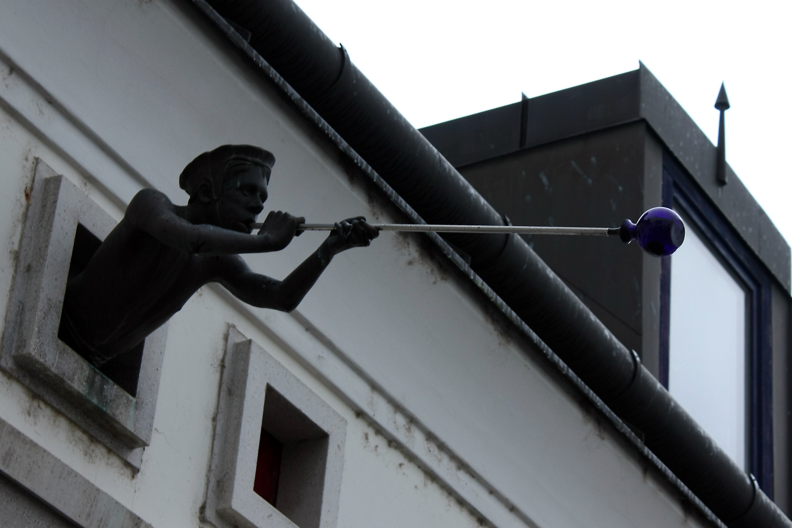
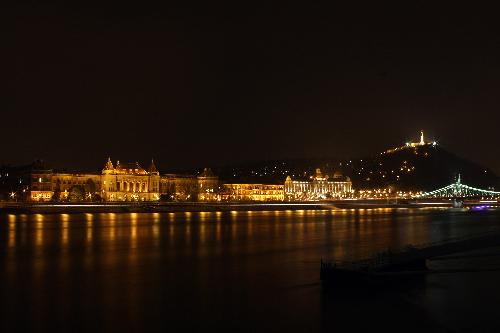
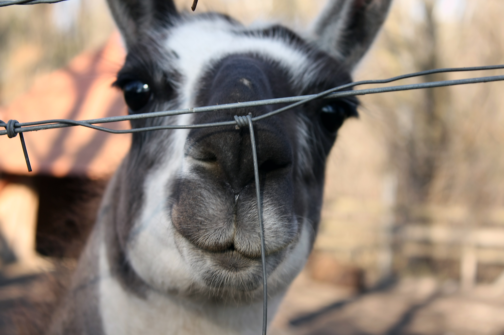

Kacsákok
Egy fiú kacsák és egy nő kacsák a háttérben.

Az üvegfújó
Szentendei kiruccanásunk során látott sok csoda közül az apró, szinte észrevehetetlen dolgok voltak a legkiemelkedőbbek.

Dunapart
Sirályi integráció a dunaparti kikötőknél.

Fények
A budapesti rohanó éjszaka a bástyákként álló épületekkel szemben.

Boldog Coci
Coci boldogan pózolt a kamerának, kár hogy a fókusz nem sikerült, ezért megsértődött és továbbállt.
"Amatőrökkel nem dolgozom!"

Barátom
A láma sokkal támogatóbb társnak bizonyult, ezért sikerült róla lőni egy félig elfogadható portrét.
Kacsákok
Egy fiú kacsák és egy nő kacsák a háttérben.
Az üvegfújó
Szentendei kiruccanásunk során látott sok csoda közül az apró, szinte észrevehetetlen dolgok voltak a legkiemelkedőbbek.